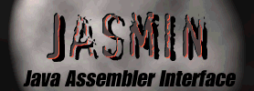

About Jasmin
Jonathan Meyer, July '96
1.1 Introduction
This document tries to answer some questions you might have
about Jasmin. In particular, several people have asked me what
Jasmin is, why they might use Jasmin, and why I wrote it in the
first place. I've tried to give some answers to these questions
below.
1.2 What is Jasmin?
Jasmin is a Java Assembler Interface. It takes ASCII descriptions for Java
classes, written in a simple assembler-like syntax using the Java Virtual
Machine instructions set. It converts them into binary Java class files
suitable for loading into a Java interpreter.
To give you a flavor, here is the Jasmin assembly code for HelloWorld:
.class public HelloWorld
.super java/lang/Object
;
; standard initializer (calls java.lang.Object's initializer)
;
.method public <init>()V
aload_0
invokenonvirtual java/lang/Object/<init>()V
return
.end method
;
; main() - prints out Hello World
;
.method public static main([Ljava/lang/String;)V
.limit stack 2 ; up to two items can be pushed
; push System.out onto the stack
getstatic java/lang/System/out Ljava/io/PrintStream;
; push a string onto the stack
ldc "Hello World!"
; call the PrintStream.println() method.
invokevirtual java/io/PrintStream/println(Ljava/lang/String;)V
; done
return
.end method
Jasmin was written as the companion to the book "Java Virtual Machine",
soon to be published by O'Reilly, written by Troy Downing and myself.
1.3 Motivation for Jasmin ("why did you write Jasmin?")
We were at first reluctant to write Jasmin, in the main because we
didn't want to introduce yet another syntax/file format if it could
be avoided. However, for a number of reasons, we eventually decided
we had no choice. Two of the reasons were:
The Java .class file format is hairy
Generating a Java class file manually is pretty fiddly. Its like
creating an a.out (or .exe) file by hand.
Even using a package like JAS (a Java API for creating class
files, used internally by Jasmin and written by KB Sriram), you
need to know a lot about the philosophy of the Java Virtual
Machine before you can write something at the Virtual
Machine level and generate a Java class.
We wanted something that made it very easy for a student or programmer
to explore the Java Virtual Machine, or write a new language
which targets the VM, without getting into the details of constant
pool indices, attribute tables, and so on.
Creating a Java assembler seemed like a good solution.
Sun has not defined an assembler format
Unfortunately, Sun has not seen the need for a Java assembler,
and has not created a standard assembler format.
Sun does provide a javap program which can print the assembly code
in a class file. However, the javap output is inappropriate for
use as an assembler format. It is designed to be read by a person,
not to be parsed by an assembler, so it has a number of
omissions and drawbacks.
1.4 What can I do with Jasmin?
To give you some ideas, below are some theoretical Jasmin users/uses.
Teachers
If you are teaching a compilers course, you could have students
write a compiler which generates Jasmin assembly files,
and then assembles those files into Java class files. Then you
can integrate the advantages of the Virtual Machine (portability,
the verifier, an object model...) into your courseware.
Hobbyists
Jasmin lets you poke around in Java at the VM level, so that
you can gain a real understanding of how Java works and
what the Virtual Machine is like.
System Implementors
If you are implementing a Java runtime system, Jasmin is
an essential tool for generating test classes.
Advanced Programmers
You could use Jasmin to write a critical class or method by
hand (e.g. if you think that Java isn't doing things
as well as it could).
Alternatively, you could create a syntax extension to the
Java language which uses Jasmin (or JAS).
Language Implementors
If you want to create an implementation of your
favorite programming language which targets the
Virtual Machine, Jasmin may be a simpler approach than
writing a Java class file generator. This is especially
true if your compiler is implemented in something other
than Java, since you can create Java class files easily
without having to get involved in the details of the
binary file format.
Security Wizards
Sun's claim that the Java class verifier protects you from
hostile programs is a pretty strong one. Jasmin lets you create
'hostile' class files and see if a Java implementation is really as
secure as it should be. Some people might argue that this is
a good reason not to make the assembler public. I would
disagree.
Copyright (c) Jonathan Meyer, July 1996
Jasmin Home |
Jon Meyer's Home